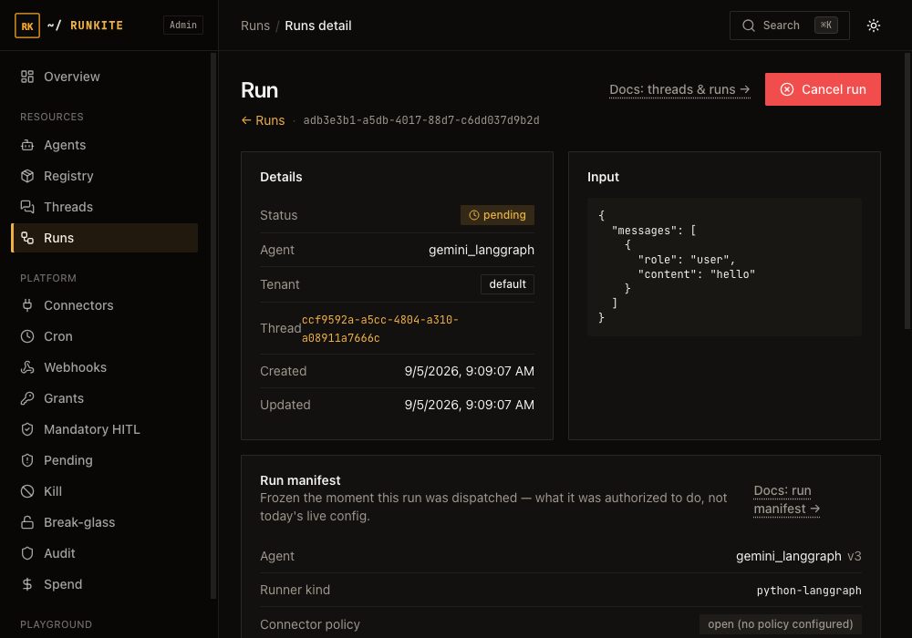

Govern
Run manifest
Every run freezes a snapshot of exactly what it was authorized to do the instant it was created — not whatever your config says right now. That snapshot is stored on the run record (metadata.run_manifest) and, when the run is actually dispatched to a runner, copied onto the queued job too. Admin can pull it up for any run, forever.
What it is
At createRunCtx — the single function every run creation path (REST, streaming, cron, A2A delegation)
goes through — the plane resolves the agent, the runner it will dispatch to, its declared tool allowlist and
connector needs, whether connector policy is fail-closed, and who asked for the run. That resolved set of facts
is written once, as run.metadata.run_manifest, and copied verbatim onto the queued job the runner
receives. Neither copy changes after that point, even if you edit langgraph.json, rotate a grant,
or flip policy on a minute later.
Why it is here
"What was this agent even allowed to do when it ran?" is a question every audit, incident review, and support ticket eventually asks. Live config answers "what's allowed right now" — which is the wrong answer once anything has changed since. A frozen per-run record is the only honest answer to a question about the past.
What's in it (schema v1)
{
"schema_version": 1,
"captured_at": "2026-09-05T02:58:06Z",
"tenant_id": "acme",
"agent_id": "sales-bot",
"agent_version": 3,
"runner_kind": "python-langgraph",
"connector_needs": ["salesforce"],
"allowed_tools": ["lookup_account"],
"policy_fail_closed": true,
"principal": { "identity": "alice", "permissions": ["runs:create"] },
"parent_run_id": null,
"depth": 0
}
agent_version— the registry version dispatched, so "which build of the agent actually ran" survives a later redeploy.allowed_tools— absent means no in-graph tool allowlist was configured (unrestricted); present, including an empty list, means the runner was told to refuse every tool call not on it.policy_fail_closed— whether the connectorpolicysection was configured for this dispatch (true= a policy engine was active; it does not mean every call was denied). Specific allow/deny/pending decisions are still Grants & HITL and PDP / Cedar — see Audit for the decision log.principal— omitted entirely when no auth provider is configured (open local/dev mode), not a blank record.
In the product

What to expect
- Automatic, no config. Every run gets one in metadata — there's nothing to turn on, and nothing changes about how you write an agent. LLM cache hits get a manifest too (no runner dispatch, so nothing is copied onto a
RunAssignment). - A record, not a gate. This is v1: it captures intent, it does not evaluate sequences of calls or block anything on its own. Reasoning about a sequence of tool calls in flight and denying a suspicious one before it runs is a different, heavier control than a per-run snapshot. Runkite's existing fail-closed grants, mandatory HITL, and break-glass are the enforcement layer; the manifest is what you check afterward to see what any of them were actually working with.
- Lives in existing storage. No new database column or migration — it rides inside the
metadataJSON column every run already has, so it works on every state backend the same way. - API-visible from day one.
GET /admin-api/runs/{id}has always returned it (it's just a key inmetadata); the Admin UI card in this release is what makes it visible without reading raw JSON.
Reference: docs/trust-governance.md · Grants & HITL · Admin UI guide → Threads & Runs · Limitations